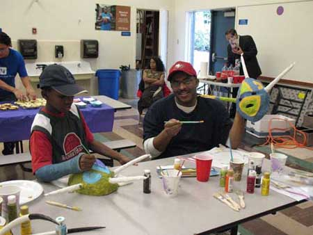
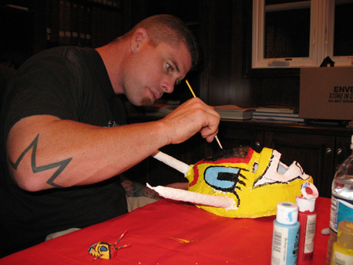

HOME
Make Me A Vejigante by Antonio Flores Sr. |
|
Vejigantes at the House of Puerto Rico Cottage
Photo: Emily Velez-Confer Time went by and we were very, very busy. We didn’t attend the meetings. We hardly went to any events. Then one day our daughter became involved with HPRSD’s Queens Program and things really started to pick up. The members made her one of their princesses and my wife and kids were attending events and activities a lot. Emily showed us a video about it. My son and I got measured for the costume and Emily measured us for the mask. Once the mask was ready my son and I each painted one. The day that we painted the masks was also a day that the Reinitas had practice for Danza. They were preparing for a performance at a retirement home. It was a fun day because they baked and decorated cookies and we ordered pizzas. Antonios painting their Vejigante Masks! Painting the mask was fun and relaxing. I painted it in my own style, but with colors Emily gave me to make sure it matched the costume. I made it my own, adding details that meant something to me. My son sat next to me and painted his mask. He was happy and excited to be able to make his own. It was actually the first time that we had actually done anything like that (together).
I got to know the other dads – Sonny was painting his mask too. Sonny Thompson focused on his mask painting. Photo: Emily Velez-Confer I got to know some of the members. I like this group. The people are nice and you feel like you are welcome. I feel that now that I’m involved in something, I am more connected with House of Puerto Rico. I have more pride in being Puerto Rican and I think it’s going to be a good thing for me and my family. Now I look forward to meetings and events at the House of Puerto Rico.
|